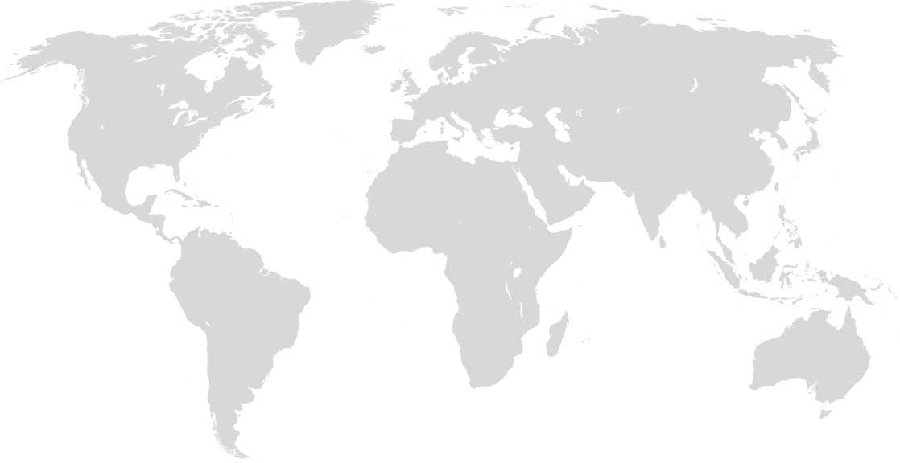
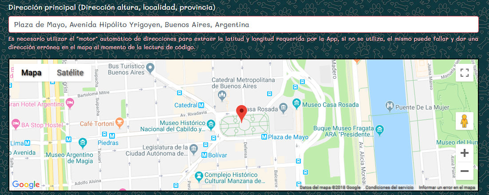

Preguntas Frecuentes
 Pet-QR F.A.Q Ver
+
Pet-QR F.A.Q Ver
+
Simplemente porque Cuesta mucho más de su valor de venta, las tecnologías que utiliza son muy sólidas y confiables. + +
Ver +
Realmente no tenemos límites para la venta online, porque este sistema se concivió con el fin evitar los envíos, hacia el interior y exterior del país, sin tiempos de espera, etc...
Ver +
No tiene gastos
mensuales, una vez realizada la compra los datos se alojan en la
nube y el usuario puede usar el sistema junto con la App.
•
• ()
Ver +
Se compra y activa online, como si estuvieras activando un chip de celular, más simple aún. Y sino en los puntos de venta que son habitualmente veterinarias.
Ver +
Si, esa mascota ya no la usar va a usar más, se completan los datos con las de otra, o si se desea se transfiere a otra persona pasando los códigos de acceso.
Ver +
No es obligatorio colocarla, para nada, se puede declarar una plaza cercana a su zona de residencia, o una zona muy transitada, la ubicación que ustedes deseen, pero sí es obligatorio poner alguna ubicación en el mapa ya que el sistema está programado para obtener direcciónes por medio de geocódigo.
Ver +
Los diseños que vienen con logos o imagen en el medio se descargan en formato PDF, los mismos se pueden manipular con varios programas ya conocidos en el mercado, aparte ponemos a disposición los mismos QR sin dibujo ni diseño para descarga en formato PNG y JPG.
Ver +
En ningún caso, se puede descargar las veces que quiera, sin embargo los límites de descarga son naturales a la función, ya que por más que impriman 20 códigos, la Historia clínica va a ser la de un sólo animal, así como los datos básicos también, sin embargo hay un beneficio amplio para cuando se quiere tener un control de la ubicación, Ejemplo si tenés 4 perros y a los 4 comparten el mismo código y uno se pierde, cuando lean el QR va a llegar la ubicación del perro perdido, en el Caso que se pierdan dos... estamos en problemas... ya que ahí vas a tener que analizar la ubicación de cada aviso de latitud y longitud... Por eso decimos que el límite es natural.
Ver +
Porque el sistema actual va en ésa dirección, nosotros nos ahorramos enviarlo, ustedes de esperarlo y pagar envío, así como también disponen de descargas del mismo QR en diferentes tamaños y diseños, de esta manera personas del interior del país y de todo el mundo pueden tener en cuesti�n de minutos un sistema de seguridad para su amigo fiel.
Ver +
Es gratuito, y despreocupate si tenés algun problema, te comunicás con nosotros a info@molokotech.com indicando tu código QR que es el nro de 24 dígitos, todo tiene solución.
Ver +
Bueno esos son usos de una vieja costumbre, sin embargo la compra online te permite acceder a muchos diseños más, así como también es más económico, cuando uno tenga ganas lo imprime y lo coloca donde quiera, en una chapita, en un llavero, donde les parezca, así como también al haber diferentes tamaños está la posibilidad de un id más grande para pretal. Así como también hay que tener en cuenta que por ejemplo si uno vive en Jujuy y lo quiere va a tener que esperar y encima pagar envío con la incertidumbre del trayecto, porque puede pasarle cualquier cosa al producto en el viaje, seamos realistas.
Ver +
Los datos permitidos son todos aquellos inherentes a los animales en
cuestión, o varios de ellos en el campo de historia clínica, sin
embargo no nos parece correcto ingresar otro tipo de dato de nivel
personal y /o empresarial, asi como también datos sensibles como
claves de cualquier cuenta desde servicios web hasta bancarias, ya
que nuestro único campo encriptado es el de las contraseñas por
razones obvias, nosotros no sabemos sus contraseñas pero el resto de
los campos no están encriptados, asi que por favor no ingrese
información sensible.
A pesar de que nuestra web es segura ya que utiliza SSL
(el candado a la izquierda de la barra de direcciones, es tecnología
de cifrado que permite que la información sea vista sólo por usuario
y nosotros), nuestros medios de cobro son por terceras partes, como
por ejemplo MercadoPago o TodoPago, porqué?, muy simple, ya que en
el momento que usted ingresa cualquier información de pago la envía
a ellos y no a nosotros, así de esa manera ellos se encargan de
cobrar y nosotros de enviar el id correspondiente.